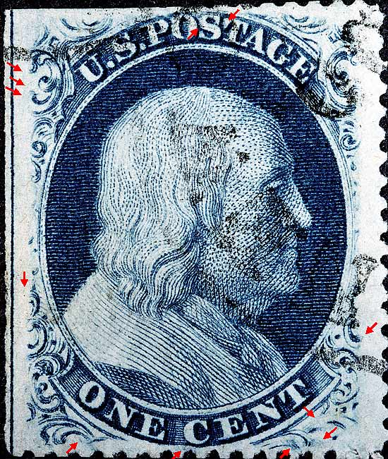
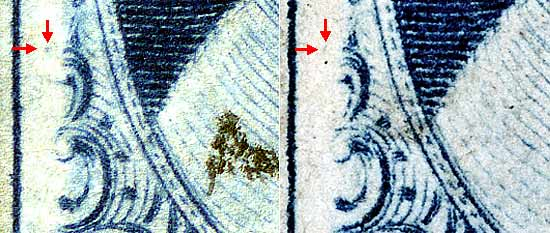
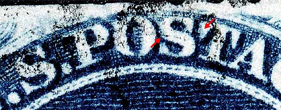

| 1¢ Franklin Issue of 1857-61, PLATE 5.
Pos 31R5, (Scott #24 var) |
| Scott #24 Blue, Type Va, Relief D Issued only perforated. |
|  |
| Figure 1. (Below) A diagonal band of color below the C of CENT as illustrated in the Neinken plating diagrams.
All images on the left are Courtesy of Dick Celler |
| Figure 2. (Below) A large blurry dot of color inside of Ornament H. This plating mark is not illustrated in the Neinken plating diagrams. This dot was produced by a piece of foreign debris attaching itself to the transfer roller during entry onto the plate. The first entry of this mark can be seen on Position 71R5 and then carried over to this entry. The other marks below the O of ONE are also not illustrated in the plating diagrams but have been confirmed as constant. |
| Figure 3. (Below) Blurs in the lower right plume and scrolls also not illustrated in the plating diagrams but have been confirmed as constant. The plating diagrams slightly illustrate this area as weakly impressed. |
| Figure 4. (Below) A small dot of color to the left of Ornament E not illustrated in the Neinken plating diagrams but confirmed as constant.
 |
| Figure 5. (Below) Very faint lines of color not illustrated in the Neinken plating diagrams. These lines reveal themselves best on earlier impressions and no doubt fade away as the plate wears. |
| Figure 5. (Below) The blurs in O and S of POSTAGE as illustrated in the plating diagrams.
 |
| DISCLAIMER and COPYRIGHT INFORMATION: Thanks for visiting this site. I hope you learn something new as we are making new discoveries all the time. You, the visitor, have my permission to link to my pages and to share the INFORMATION with others. The images themselves fall under the fair use guidelines established by the United States Congress and Copyright law. Basically contact us before using. I also ask in return that you send me an e-mail if I have made a mistake, or have made some other technical blunder that in my rush to put these pages up would cause the visitor confusion. Please also visit my other website at www.slingshotvenus.com. and support the live music arts. While your there, be sure to purchase our music. There are not many philatelic rock stars around and we need all the help we can get. :-) I can be reached at: nerdman@ix.netcom.com |